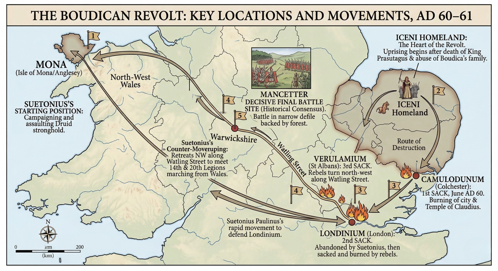

Lesson 9
How and why did the Boudiccan revolt erupt in AD 60/61 — and what happened when Boudicca’s forces turned their fury on the Roman city of Camulodunum?
~28 min
AH11-1: Describes the nature of continuity and change in the ancient world
AH11-3: Analyses the role of historical features, individuals and groups in shaping the past
AH11-6: Analyses and interprets different types of sources for evidence to support an historical account or argument
AH11-10: Discusses contemporary methods and issues involved in the investigation of ancient history
To understand how and why the Boudiccan revolt erupted in AD 60/61, examining the attack on Camulodunum, the fate of the Ninth Legion, and the collapse of Roman authority in the province.
0 of 4 criteria met
By the end of this lesson, I can:
Teacher — Sharing LISC
Display the learning intention and success criteria on the board. Read them aloud and ask students to identify the key verbs (describe, explain, analyse, assess). Note that today’s lesson covers the dramatic opening of the revolt — students will be engaging with narrative history. Check understanding: “Can someone tell me what ‘assess’ means in history?” (cold call).
In Lesson 8 we examined the military differences between Celtic and Roman forces. Today we see those forces clash as the revolt begins. Let’s retrieve what we learned.
Quick retrieval: Which of these was a key Celtic military weakness?
Teacher — Activating Prior Knowledge
Use cold call to ask 3–4 students what they wrote. This connects Lesson 8 (military tactics) to today’s narrative of the revolt beginning. The correct answer for the poll is “No supply lines” — use this to bridge into the lesson.
CFU strategy: Think-pair-share — “With your partner, discuss: Based on what you know about Celtic and Roman military differences, what advantages would Boudicca have had when attacking an undefended Roman town?” (60 seconds).
Teacher — Modelling (‘I Do’)
Read the first paragraph aloud and model the thinking: “Notice that Tacitus records omens — supernatural signs. As historians, we don’t take these literally, but they tell us something important: the Roman settlers were deeply anxious. They sensed that something terrible was coming.”
Pause to check understanding: “Why might Tacitus include omens in a historical account?”
The revolt did not begin without warning. Tacitus records a series of omens that the Roman settlers at Camulodunum interpreted as portents of disaster: the statue of Victory was said to have fallen from its pedestal and turned as if fleeing the enemy; women reported hearing sounds of screaming from the senate house; the theatre rang with howling; and the Thames estuary, at low tide, was said to resemble the ruin of a colony. Whether or not these omens were real, they reflected a community that was deeply anxious about its security — and rightly so.
The immediate human trigger was the treatment of Boudicca and the Iceni following the death of Prasutagus. Roman officials seized the Iceni kingdom, flogged Boudicca, and assaulted her daughters. Simultaneously, Roman moneylenders — most notoriously the philosopher Seneca, who had reportedly lent forty million sesterces to prominent Britons — called in their loans abruptly, creating financial devastation among the native nobility. The procurator Catus Decianus, responsible for financial administration of the province, oversaw these abuses and would later be held personally responsible for provoking the revolt.
The neighbouring Trinovantes tribe, still nursing deep grievances over the founding of Camulodunum on their ancestral land, joined the Iceni. Other unnamed tribes also allied themselves with Boudicca. By the time the revolt erupted, Boudicca commanded what Tacitus described as an army of enormous size.

Teacher — CFU
Use cold call. If they answer incorrectly, ask: “Can someone identify the different groups who had reasons to revolt?” Aim for 80%+ success before moving on.
What best explains why the revolt gained such widespread support?
Arrange these events in the order they occurred:
Teacher — Guided Reading (‘We Do’)
Have students read this section silently. Then use think-pair-share: “Why was Camulodunum such a powerful symbolic target? Discuss with your partner.” (60 seconds). Cold call 2–3 pairs to share.
Draw attention to the phrase “blatant stronghold of alien rule” — ask students what Tacitus is conveying with this language.
Camulodunum (modern Colchester) was the most symbolically loaded target the rebels could have chosen. It was the oldest Roman city in Britain, the first colonia (a settlement of Roman citizens, typically retired veterans), and the site of a massive temple dedicated to the deified Emperor Claudius. To the Britons, the temple was, as Tacitus writes, “a blatant stronghold of alien rule” — a permanent monument to their conquest and subjugation, built on seized land, and maintained at local expense through compulsory levies.
The veterans settled at Camulodunum had compounded these grievances by appropriating additional land from the Trinovantes, treating British landowners with contempt, and generally behaving as if the entire surrounding region was their personal property. Tacitus notes that the Britons drove out the Roman settlers from their farms and harassed them continuously.
When Boudicca’s forces advanced on Camulodunum, the town had no walls and no garrison. The procurator Catus Decianus, when appealed to for help, sent only two hundred soldiers — and even these were poorly equipped. The settlers sent to Londinium for additional assistance but received none in time. Suetonius Paulinus, the provincial governor, was at the time engaged in a military campaign against the Druids on the island of Mona (Anglesey) in north-west Wales — far from the revolt.
The attack on Camulodunum was ferocious. Tacitus records that the town was taken and plundered with no mercy being shown to old or young, or even to women. The Roman settlers and their allies retreated to the Temple of Claudius as a last stronghold. The temple, a large stone building on a raised platform, offered some defensive potential, and the survivors held out there for two days before the doors were broken down and all inside were killed.
Archaeological excavation at modern Colchester has confirmed these events in extraordinary detail. Below the foundation platform of the present Norman castle (which was built reusing Roman materials on the same site), archaeologists have found the podium of the original temple — one of the largest Roman buildings in Britain. A thick destruction layer associated with the Boudiccan revolt has been identified across the site, containing burnt material, collapsed structures, and artefacts consistent with a violent destruction in the mid-first century AD.
Archaeological Connection
The Boudiccan destruction layer at Camulodunum typically appears as a reddish-orange layer of burnt debris, charred wood, melted glass, and broken pottery. This physical record in the soil directly corroborates Tacitus’s written account of the town’s destruction — a rare and powerful convergence of literary and archaeological evidence.
Why was the Temple of Claudius at Camulodunum such a significant target for the rebels?
Teacher — Scaffolding (‘We Do’)
This is a pivotal moment in the narrative. Read the section aloud with appropriate gravity. After reading, ask: “Why was the destruction of a Roman legion’s infantry such a shocking event?” Connect back to Lesson 8’s content on Roman military professionalism.
Think-pair-share: “What does the defeat of the Ninth Legion tell us about Boudicca’s forces?” (60 seconds).
News of the fall of Camulodunum reached Quintus Petilius Cerialis, commander of Legio IX Hispana (the Ninth Legion), stationed at Lindum (Lincoln). Cerialis immediately led his infantry south towards the rebels — a bold but ultimately catastrophic decision. The Roman cavalry managed to escape, but Boudicca’s forces ambushed and annihilated the infantry in a pitched engagement. Tacitus does not give us the exact number of Roman dead, but the scale of the defeat was clearly catastrophic.
The destruction of a Roman legion’s infantry in open battle was an extraordinary event. Rome had not suffered such a defeat in Britain since the initial invasion, and the news sent shockwaves through the province. Cerialis himself fled to safety with the surviving cavalry — an act that later generations of Roman historians found deeply embarrassing, though Cerialis would eventually redeem his reputation through later service.
The defeat of the Ninth Legion demonstrated that Boudicca’s forces were not simply a mob of angry provincials. They were a coordinated military force capable of tactical planning, able to set an ambush, and large enough to overwhelm professional Roman soldiers in the field.
Primary Source: Tacitus, Annals 14.32 (c. AD 98). Tacitus was a Roman senator and historian writing approximately fifty-seven years after the revolt. His father-in-law Agricola served as governor of Britain, giving him access to firsthand accounts of British affairs. Translation: A.J. Woodman (Penguin, 2004).
“Petilius Cerialis, the legate of the Ninth Legion, came to the rescue but was defeated: his infantry was cut down and Cerialis himself, escaping with the cavalry, took refuge in his camp. Frightened by this disaster and by the hatred of the province whose treatment he had provoked by his greed, the procurator Catus Decianus crossed over to Gaul.”
Complete each field. Use the hint button if you need guidance.
Teacher — CFU
Use gesture voting: “Hold up A, B, C, or D with your fingers. On three — one, two, three — show me.”
What was the primary significance of the defeat of Legio IX Hispana?
Teacher — Independent Reading (‘You Do’)
Students read this section independently. After reading, use cold call: “What does Decianus’s flight tell us about the state of Roman authority in Britain?”
Guide students to see that with the governor absent, the procurator fled, and a legion shattered, there was effectively no Roman authority left in the province. This is a crisis point.
The flight of Catus Decianus to Gaul is one of the most revealing details in Tacitus’s account. As procurator (the imperial financial officer responsible for the province), Decianus had been responsible for implementing the policies that sparked the revolt — the seizure of the Iceni kingdom, the stripping of grants made by Claudius, and the calling in of loans. Tacitus’s reference to “the hatred of the province whose treatment he had provoked by his greed” is a direct and damning condemnation.
Decianus’s flight meant that Roman civil authority in Britain had effectively collapsed. With the governor absent fighting Druids, the procurator in flight, the Ninth Legion shattered, and Camulodunum destroyed, the province of Britannia was in the gravest crisis since the Claudian invasion of AD 43. Everything now depended on Suetonius Paulinus.
AD 43
Roman invasion of Britain under Emperor Claudius. Foundation of Camulodunum as first colonia.
c. AD 47
Prasutagus becomes client king of the Iceni under Rome.
c. AD 59
Suetonius Paulinus becomes governor of Britain.
AD 60/61
Death of Prasutagus. Roman abuses trigger revolt. Boudicca allies with Trinovantes.
AD 60/61
Camulodunum destroyed. Temple of Claudius sacked. Legio IX defeated by Boudicca.
AD 60/61
Catus Decianus flees to Gaul. Suetonius Paulinus rides to Londinium.
Why was the flight of Catus Decianus so significant?
Choose the level that challenges you, or work through all three.
Teacher — Independent Practice (‘You Do’)
Students should attempt these only after a high success rate on the CFU questions. Direct all students to Foundation first.
Exit ticket: Students answer Foundation Q1 on a sticky note before leaving.
Identify and describe
Analyse and explain
Evaluate and debate
Click each card to reveal its definition.
Return to the success criteria from the start of this lesson. Can you now tick off each one? If any remain unticked, scroll back and review the relevant section.
Teacher — Review of Learning
Self-assessment for each criterion: “Thumbs up if confident, sideways if partly there, down if you need more help.”
Exit ticket: “On a sticky note, write one sentence explaining why the fall of Camulodunum was both a military and symbolic disaster for Rome.” Collect as students leave.
How confident do you feel about this lesson’s content?